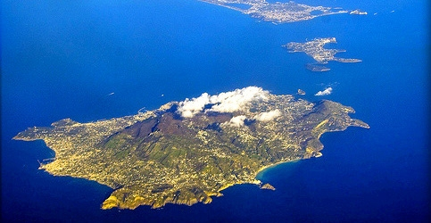
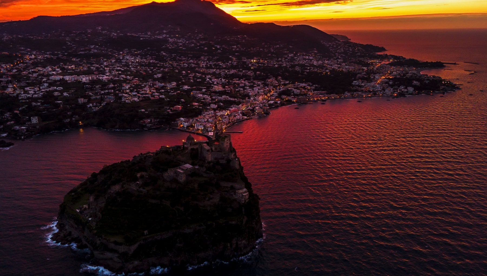

←CONOSCIUTA FIN DALL'ANTICHITÀ PER LA SUA STRAORDINARIA VEGETAZIONE E LA RICCHEZZA DEL SUO SOTTOSUOLO, LA MAGGIORE DELLE ISOLE PARTENOPEE RACCHIUDE UNA COMPLESSA E AFFASCINANTE STORIA GEOLOGICA.
Ischia è un'isola vulcanica situata nel Golfo di Napoli. Anche se non presenta eruzioni da molti secoli, è considerata un vulcano attivo. L'ultima eruzione risale al 1302. Oggi si osservano fenomeni di vulcanismo secondario, come sorgenti termali e emissioni di gas. Queste attività indicano che il sistema vulcanico è ancora vivo. L'isola è famosa per le sue terme e il turismo. Tuttavia, è monitorata per possibili fenomeni futuri.
| Stato | 🟡 Quiescente |
| Regione | Campania |
| Paese | Italia |
| Eruzioni storiche | 10+ |
| Parco naturale | No |
